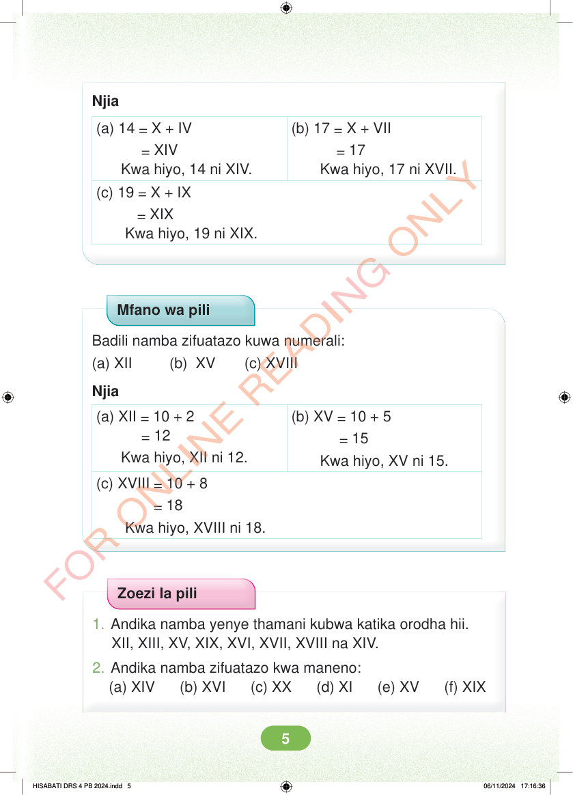

Njia (a) 14 = X + IV = XIV Kwa hiyo, 14 ni XIV. (b) 17 = X + VII = 17 Kwa hiyo, 17 ni XVII. (c) 19 = X + IX = XIX Kwa hiyo, 19 ni XIX. Mfano wa pili Badili namba zifuatazo kuwa numerali: (a) XII (b) XV (c) XVIII Njia (a) XII = 10 + 2 = 12 Kwa hiyo, XII ni 12. (b) XV = 10 + 5 = 15 Kwa hiyo, XV ni 15. (c) XVIII = 10 + 8 = 18 Kwa hiyo, XVIII ni 18. Zoezi la pili 1. Andika namba yenye thamani kubwa katika orodha hii. XII, XIII, XV, XIX, XVI, XVII, XVIII na XIV. 2. Andika namba zifuatazo kwa maneno: (a) XIV (b) XVI (c) XX (d) XI (e) XV (f) XIX HISABATI DRS 4 PB 2024.indd 5 HISABATI DRS 4 PB 2024.indd 5 06/11/2024 17:16:36 06/11/2024 17:16:36